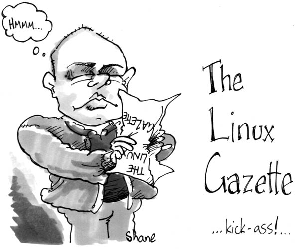

![[ Table of Contents ]](../gx/indexnew.gif)
![[ Front Page ]](../gx/homenew.gif)
![[ Prev ]](../gx/back2.gif)
![[ Linux Gazette FAQ ]](./../gx/dennis/faq.gif)

The Back Page
About This Month's Authors
 Shane Collinge
Shane Collinge
Part computer programmer, part cartoonist, part Mars Bar. At night, he runs
around in a pair of colorful tights fighting criminals. During the day... well,
he just runs around. He eats when he's hungry and sleeps when he's sleepy.
Matteo Dell'Omodarme
I'm a student at the University of Pisa and a Linux user since 1994.
Now I'm working on
the administration of Linux boxes at the Astronomy section of the
Department of Physics, with special experience about security.
Edward Livingston-Blade
Edward is the netadmin and
webmaster at Palm Springs Adult School in
Palm Springs, California. He also teaches some of their computers classes, and
when he's not working for the school, he does freelance consulting and
troubleshooting. In his free time, he hacks on Linux (of course) and maintains
Edward's Linux
BrainDump. He is thinking about joining a support group for computer geeks
who take on too many responsibilities. (And if there isn't such a group, maybe
he can start one? How much work could that be?)
Wolfgang Mauerer
Wolfgang
wrote the German book Textverarbeitung mit LaTeX unter Unix.
he sometimes works for the German Linux Magazin as a technical writer,
and is an employee of the small German web company MyNetix, where he acts as
programmer and system administrator.
Mark Nielsen
Mark founded The Computer Underground, Inc. in June of 1998. Since then,
he has been working on Linux solutions for his customers ranging from custom
computer hardware sales to programming and networking. Mark specializes in Perl,
SQL, and HTML programming along with Beowulf clusters. Mark believes in the
concept of contributing back to the Linux community which helped to start his
company. Mark and his employees are always looking for exciting projects to do.
Krassimir Petrov
Krassimir has a PhD in Agricultural Economics from Ohio State University. He
also has an MA in Economics and a BA in Business (Finance, Accounting,
Management).
Pramode C.E and Gopakumar C.E
Pramode works as a teacher and programmer while
Gopakumar is an engineering student who likes to play with Linux
and electronic circuits.
Jason Steffler
Jason
is a software engineer currently consulting at Sprint in KC. His
computer-related interests include: Object-Oriented programming & design,
Smalltalking, software development methodologies, large industrial software
systems that often address 'wicked' problems, and of course, noodl'n around
with Linux.
Alex Vrenios
Alex is a Lead Software Engineer at Motorola. He is always taking some sort of
class. He just finished the class work toward a Ph.D. in computer science,
but only time will tell if it goes any further. His wife, Diane, is certainly
his best friend and biggest fan. He enjoys his two Schnauzers, Brutus and Cleo,
and his dozens of African Ciclids, too. He is a licensed amateur radio
operator, as is Diane, and they spend more than a few nights together observing
the skies through their 5-inch telescope. They like to get out and stay
active, to enjoy life together.
Not Linux
This caricature of your humble editor is by Shane Collinge, who draws our HelpDex series.

The post-WTO protest to shut down Microsoft (or at least annoy them) took
place as scheduled, but your editor had a doctor's appointment and couldn't
attend. News coverage was scanty except for this
Seattle Times article.
The Seattle Weekly later did an
analysis of the event, although only the first part of the article is
direcly about Microsoft.
Ironically, Microsoft Singapore sent the Gazette a nice piece of
spam about a "Windows 2000 Professional Sales Training"
seminar. "Come and learn all about Windows 2000 Professional, then take the
online test. Microsoft will award all who pass with a certificate you can
frame and show others your achievement." I can't wait. Not.
Thanks for sending in your articles and 2-cent tips.
Remember to have fun with Linux this month!
Michael Orr
Editor, Linux Gazette, gazette@linuxgazette.net
This page written and maintained by the Editor of the Linux Gazette.
Copyright © 2000, gazette@linuxgazette.net
Published in Issue 51 of Linux Gazette, March 2000